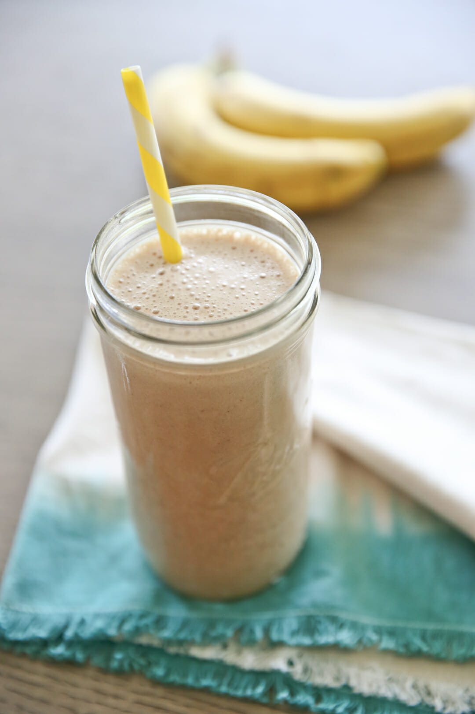

Peanut Butter and Banana Protein Shake

Description:
This peanut butter and banana shake tastes amazing, and can become macro-friendly
with the optional addition of a scoop of protein powder. You will need a total of
6 ingredients to make this shake (1 is optional.) It takes only a couple of minutes
to make this shake.
Ingredients:
- 1 Banana
- 1 cup milk
- 2 tablespoons peanut butter or 1 serving of peanut butter powder
- 1 teaspoon cinnamon
- A couple of ice cubes
- OPTIONAL: One scoop of vanilla protein powder
Steps:
- Add all of the ingredients to a blender.
- Blend for 20-30 seconds, or until desired consistency.
- OPTIONAL: Top with whipped cream.
Enjoy!
Back to Main Page